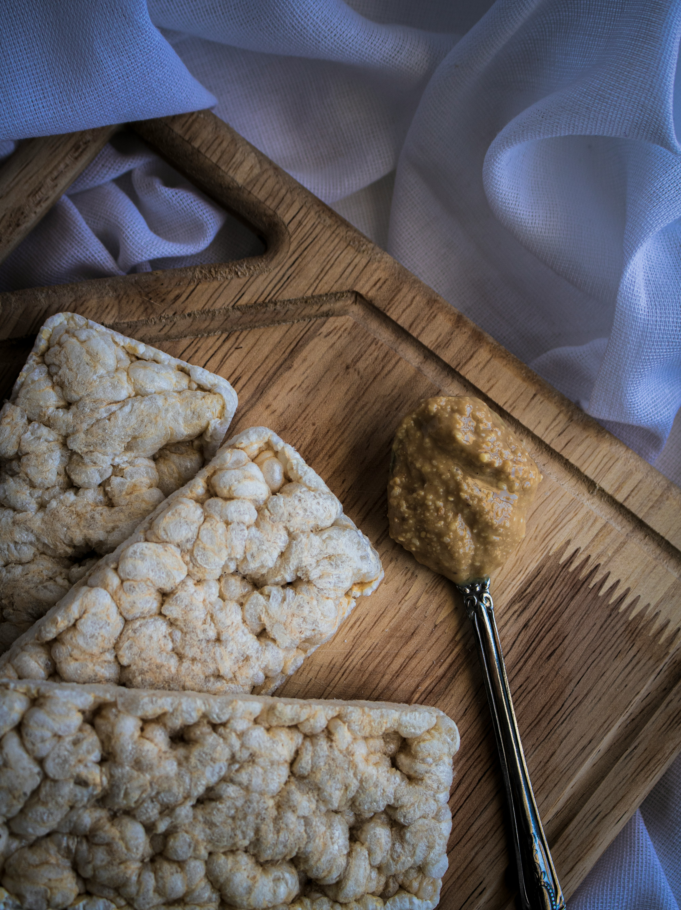

High-Protein Rice Krispie Treats

Description
These high-protein Rice Krispie treats are an easy way to add a little extra nutrition to a nostalgic favorite. Protein powder adds a satisfying boost without changing the crispy, gooey texture you love, while a pinch of salt brings out the sweet, buttery flavor.
Ingredients
- 6 tablespoons butter
- 6 cups mini marshmallows
- 3 scoops vanilla protein powder
- 1 pinch kosher salt
- 6 cups crispy rice cereal, such as Kellogg's Rice Krispies
Steps
- Lightly grease an 11x7-inch or 9x13-inch baking dish (a smaller dish will yield a thicker treat). Heat butter in a large Dutch oven over medium heat until it melts. Add marshmallows and stir until melted while gradually adding in protein powder and salt.
- Stir in cereal and remove from heat. Working quickly, transfer mixture to the prepared dish. Lightly coat hands or a rubber spatula with cooking spray and press mixture evenly into the dish.
- Let cool completely at room temperature, at least 1 hour, before cutting into squares and serving.
Home